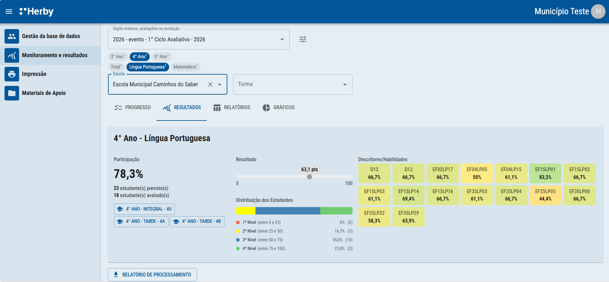
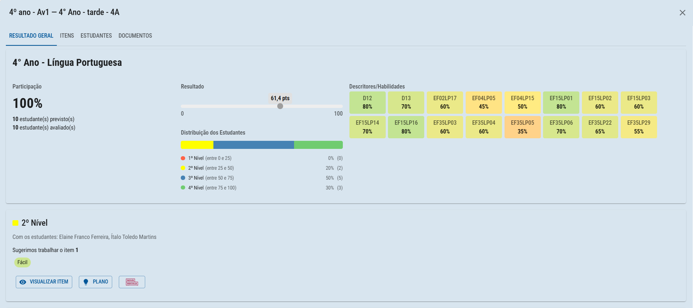
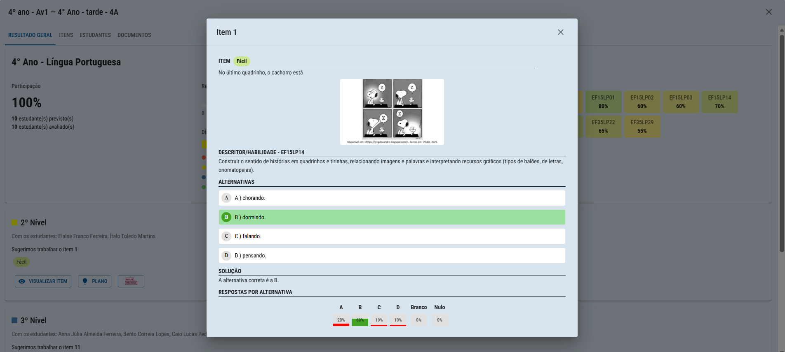
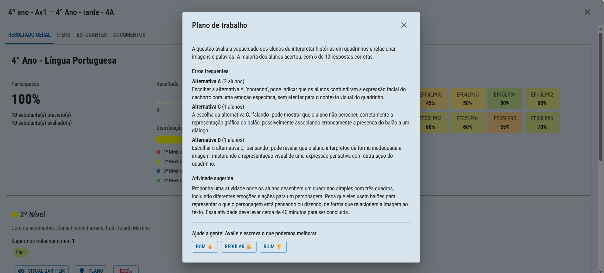
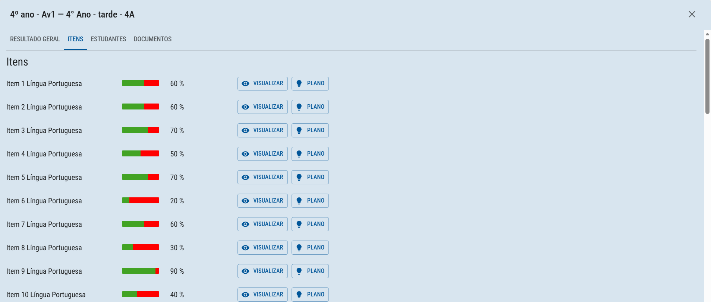
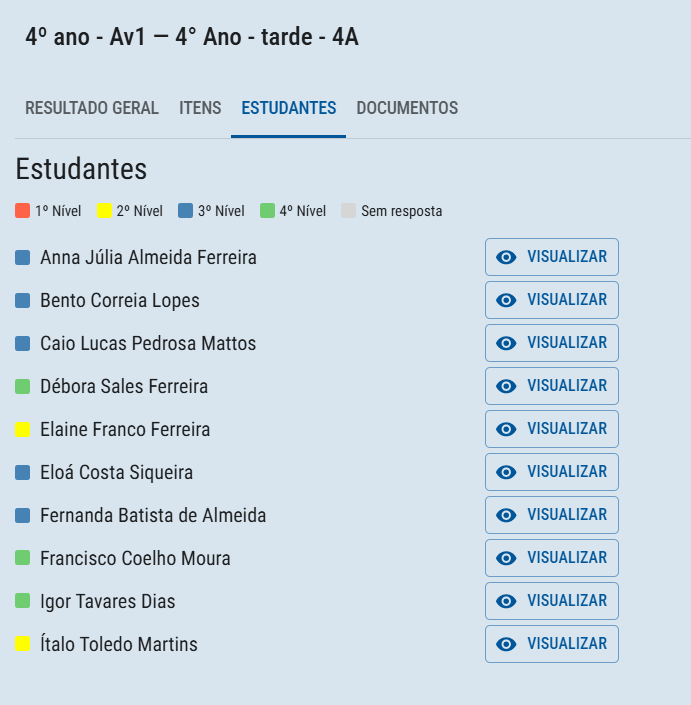
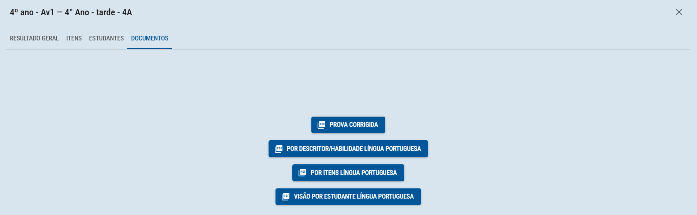

Resultados por escola e turma: resultado geral, visualização de itens, plano de aula sugerido, itens, estudantes e documentos.
Com filtro ao nível de escola ou turma, é possível acessar mais detalhes acerca do teste e dos resultados dos alunos. Também é possível gerar planos de aula e visualizar os itens do teste aplicado.

No menu superior, é possível acessar as 4 funcionalidades disponíveis.

Em resultado geral, é possível acessar uma sugestão de item do próprio teste para trabalhar com os estudantes presentes em cada nível, juntamente com um plano de aula desenvolvido por IA para apoiar este trabalho.
Em visualizar item, é possível verificar a resposta correta, a distribuição de marcação dos estudantes e o nível de dificuldade.

Já em plano, temos um resumo da questão, quais os erros frequentes e a atividade sugerida. Além de ser possível avaliar a qualidade dessa sugestão.

Na aba de itens, será possível visualizar a média de desempenho de cada um deles, além do próprio item e um plano para aquele item específico.

Na aba de estudantes, será possível visualizar o nível de cada estudante da turma, além de visualizar todo o teste dele.

Na aba de documentos, será possível visualizar e baixar alguns relatórios em PDF, como a prova corrigida e a visão por estudante na disciplina.
